探索MOD
MOD名
The Twilight Forest
解説サイト
https://w.atwiki.jp/minecraft/pages/448.html(Minecraft Japan Wiki)

MOD名
The Erebus
解説サイト
https://w.atwiki.jp/minecraft/pages/1461.html(Minecraft Japan Wiki)
MOD名
Cavern Ⅱ
解説サイト
サイト内解説
ケイブニックスケルトン(Cavenic Skeleton)
- 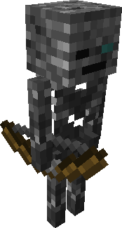
ケイブニッククリーパー(Cavenic Creeper)
- 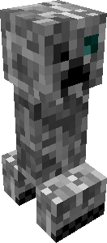
ケイブニックゾンビ(Cavenic Zombie)
- 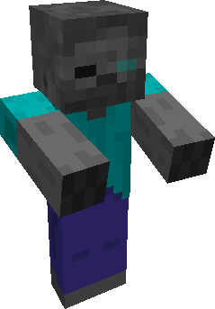
ケイブニックスパイダー(Cavenic Spider)
- 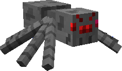
ケイブニックウィッチ(Cavenic Witch)
- 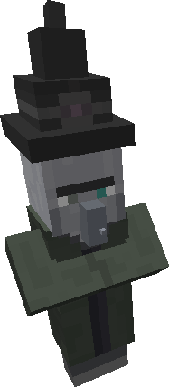
ケイブニックベア(Cavenic Bear)
- 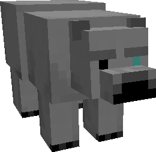
クレイジースケルトン(Crazy Skeleton)
- 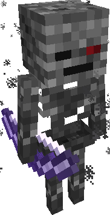
クレイジークリーパー(Crazy Creeper)
- 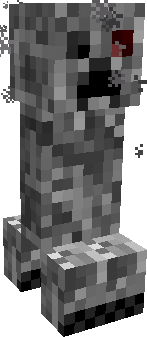
クレイジーゾンビ(Crazy Zombie)
- 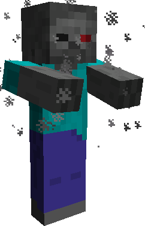
クレイジースパイダー(Crazy Spider)
- 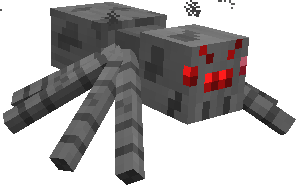
ケイブマン(Caveman)
- 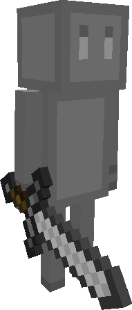
ブロック
鉱石
マグナイト鉱石(Magnite Ore)
- 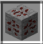
ヘキサイト鉱石(Hexcite Ore)

アクアマリン鉱石(Aquamarine Ore)
ランダマイト鉱石(Randomite Ore)
- 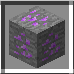
ひび割れた石(Fissured Stone)
- 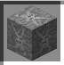
アイテム
ツール
マグナイトツール(Magnite Tools)
- 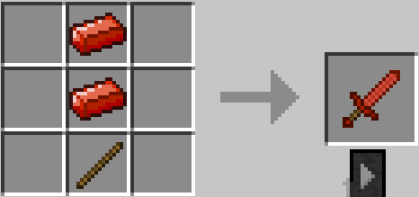
ヘキサイトツール(Hexcite Tools)
- 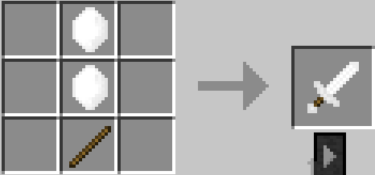
アクアマリンツール(Aquamarine Tools)
- 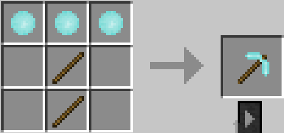
氷ツール(Icy Tools)
- 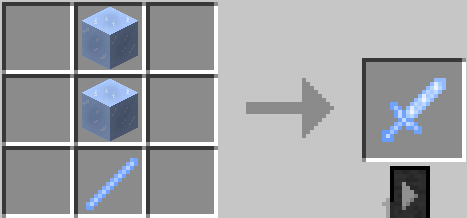
氷の弓(Icy Bow)
- 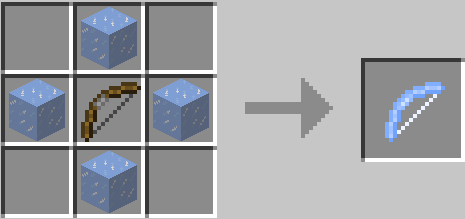
ケイブニックツール(Cavenic Tools)
- 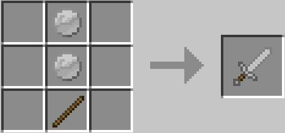
ケイブニックの弓(Cavenic Bow)
- 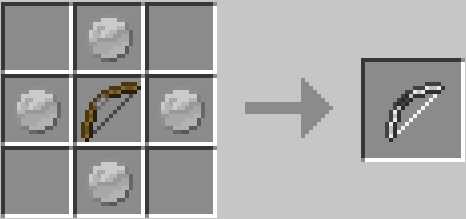
防具
ヘキサイト防具(Hexcite Armor)
- 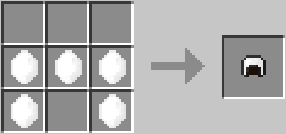
素材
氷柱(Icy Stick)
- 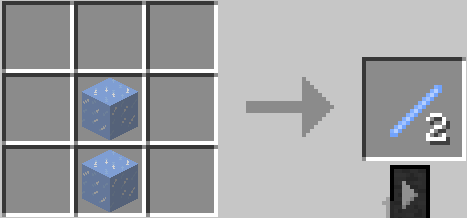
その他
幻の世界：〇〇(Mirage World:○○)
- 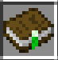
魔術書：〇〇(Magic Book:○○)
- 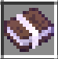
© 2020 Muscari Server All Rights Reserved.